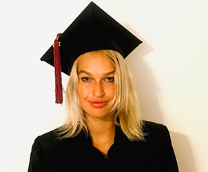

My Resume
EDUCATION
Univeristy of Miami-Expected Graduation-December 2019
Bachelor of Science in Communications
- Major in Broadcast Journalism
- Minor in Entrepreneurship
- Minor in Psychology
- Minor in Theatre
SKILLS
- Proficient in Adobe Premiere, Microsoft Word, Excel, Outlook, ENPS
- Basic knowledge of HTML and CSS
- Expertise in Research and Data gathering
- Expertise in Videography and Video Editing
- Public Speaking
- Creative Writing
- Creative Story Ideas
- Fluent in Italian
- Basic knowledge in Chinese, Spanish and French
EXPERIENCE
Camera Operator
Newsvision UMTV- University of Miami- Januray 2019-April 2019
- Operated cameras in studios during live Broadcasts in over 10 shows
- Ensured camera shots were framed correctly as stated on rundwon
- Adaptability in last minute changes in framing shots of anchors during live shows
Italian-to-English Translator
Milan, Italy and Shanghai, China
- Perfomed various translation and transcription services from Italian to English, including important emails and contracts for Servizi Italia Hong Kong (May 2017-August 2017)
- Translated from Italian to English a 50-page booklet on Neuro Lingustic Programming for Firmati&Griffati(May 2016-July 2016)
- Strenghened relationships with customers by providing assitance in interpetting and translatting important points of discussion and translating text projects for Luxury & Art Administartor Capital (March 2018-May 2018)